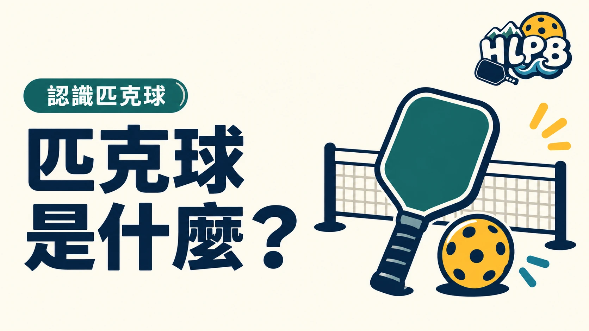

匹克球是什麼？
匹克球使用球拍和有孔的塑膠球，可以一對一單打，也可以兩對兩雙打。第一次看球賽，先記住三件事就好。
- 發球要打進對角的發球區。
- 發球後，球要在雙方場地各落地一次，接下來才可以在空中擊球。
- 球網兩側各有非截擊區；人在區內不能直接擊打還沒落地的球。
第一次想打，從哪裡開始？
先讀新手區看基本規則，再看花蓮球場列表確認場地的使用方式；若想找人一起打，可到揪打球查報名入口。
資料參考：USA Pickleball 基本介紹與規則摘要。
跟著影片看觀念
協會網站選用的中文基本擊球教材。
最後查證：2026-09-30｜資料來源：USA Pickleball 基本介紹與規則摘要
返回文章列表